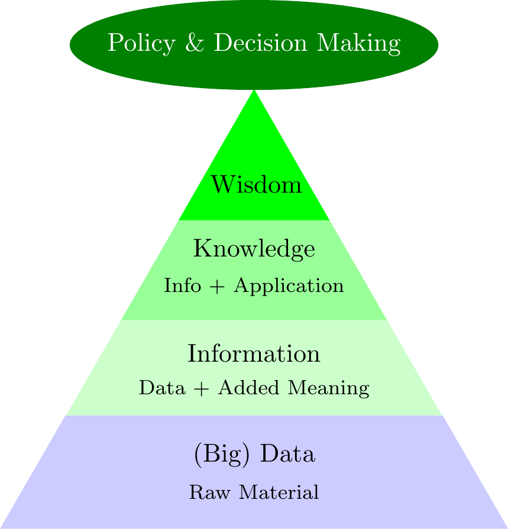
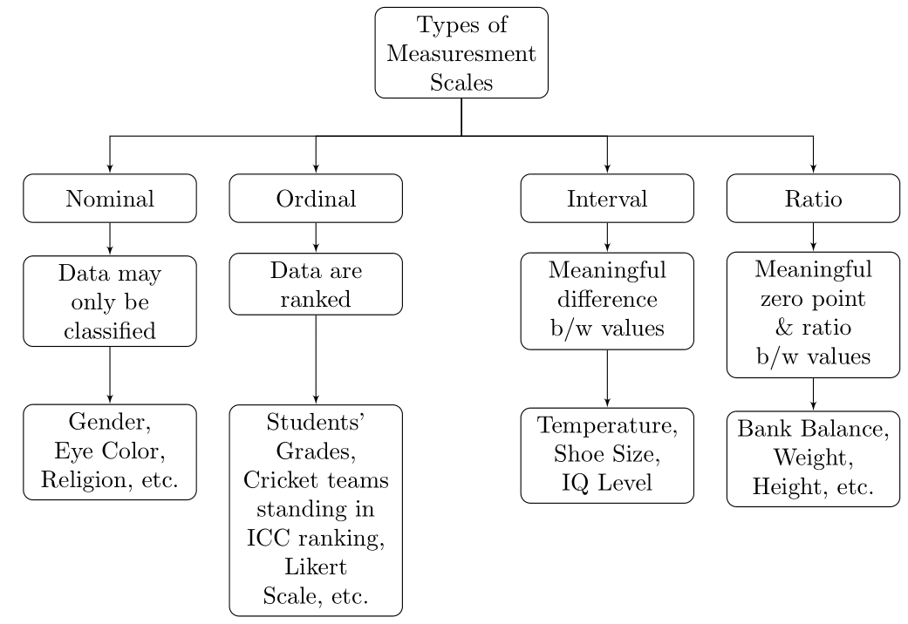
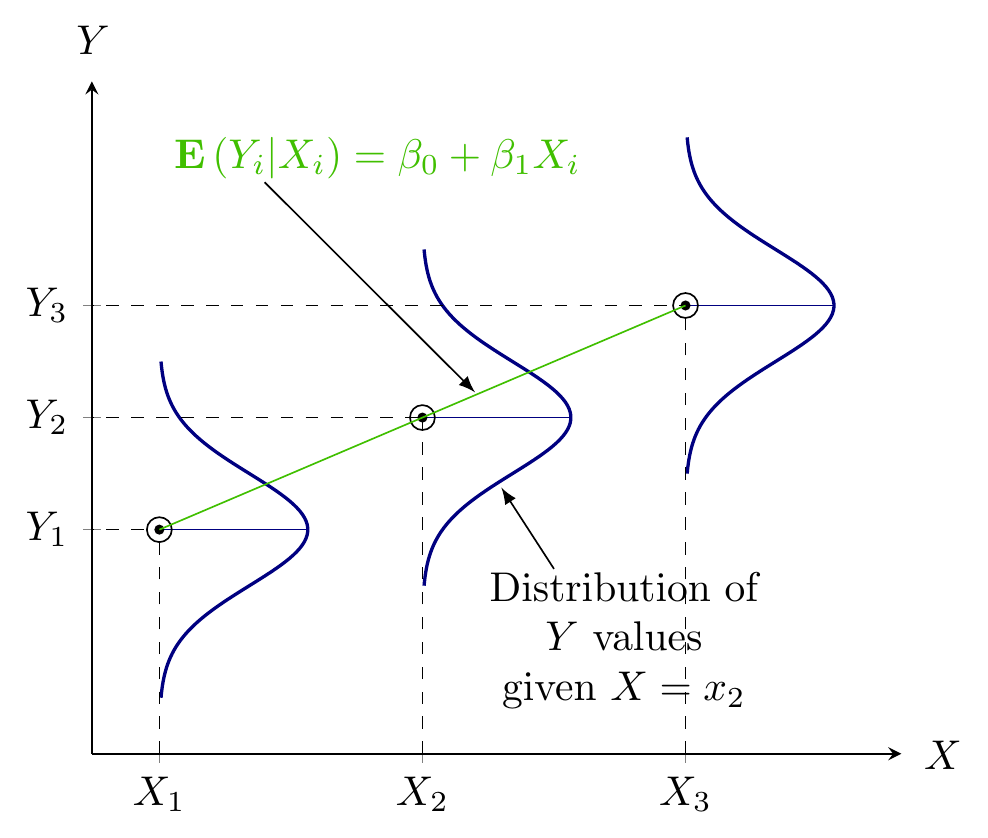
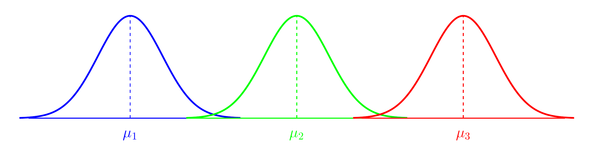
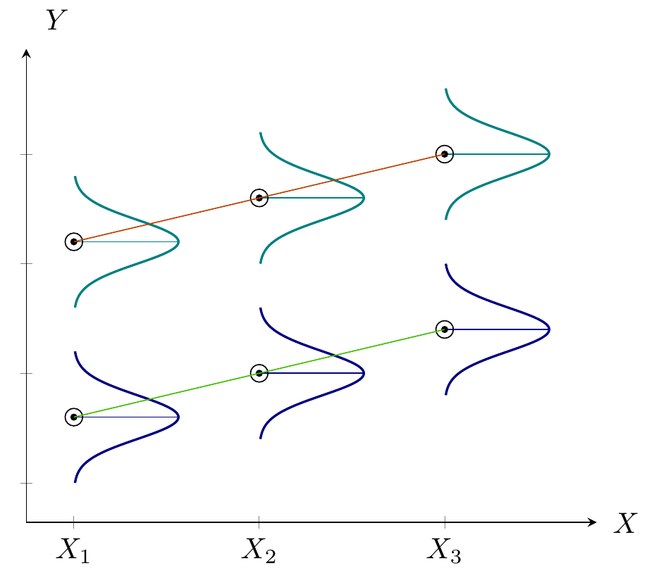

1 Introduction
In God we trust, all others must bring data.
Statistical thinking will one day be as necessary a qualification for efficient citizenship as the ability to read & write.
To call in the statistician after the experiment is done may be no more than asking him to perform a postmortem examination: he may be able to say what the experiment died of.
If all you have is a hammer, everything looks like a nail.

1.1 Decision Review System
1.2 Medical Laboratory Test
1.3 Karachi Stock Exchange
1.4 Heavy Rain in Lahore
1.5 Flood in Pakistan 2010
1.6 Drought in Pakistan
1.7 Wheat Crop in Pakistan
1.8 Introduction
- \(\color{red}{\text{Mathematics}}\) is the \(\color{red}{\text{language}}\) of \(\color{red}{\text{Science}}\)
- \(2 + 2 = 4\)
- \(0^{\circ}C = 32^{\circ}F\) (\(\color{blue}{\text{Paradox}}\))
- Every action has reaction of same extent but opposite direction. (\(\color{blue}{\text{Newton's Third Law}}\))
- \(\color{green}{\text{Statistics}}\) is the science of \(\color{green}{\text{uncertainty}}\) and \(\color{green}{\text{variability}}\)
- \(\color{green}{\text{Statistics}}\) is the \(\color{green}{\text{interpretation}}\) of \(\color{green}{\text{Science}}\)
- \(\color{green}{\text{D}}\)ata \(\color{green}{\text{D}}\)riven \(\color{green}{\text{D}}\)ecisions (\(\color{green}{\text{3Ds}}\))
1.9 Reasoning
- \(\color{green}{\text{Deduction:}}\)
- Reasoning from \(\color{green}{\text{general}}\) to \(\color{green}{\text{particular}}\).
- Man is mortal. → Every human being is mortal.
- \(\color{red}{\text{Induction:}}\)
- Reasoning from \(\color{red}{\text{particular}}\) to \(\color{red}{\text{general}}\).
1.10 Statistical Reasoning & Analysis
- \(\color{green}{\text{Statistics}}\) is the \(\color{green}{\text{science}}\) of \(\color{green}{\text{uncertainty}}\) & \(\color{green}{\text{variability}}\)
- Turning \(\color{green}{\text{Data}}\) into \(\color{green}{\text{Information}}\)
- \(\color{green}{\text{Data}}\) → \(\color{green}{\text{Information}}\) → \(\color{green}{\text{Knowledge}}\) → \(\color{green}{\text{Wisdom}}\)
- \(\color{green}{\text{Statistics}}\) is the \(\color{green}{\text{Art}}\) and \(\color{green}{\text{Science}}\) of \(\color{green}{\text{learning}}\) from \(\color{green}{\text{Data}}\).
1.11 Variable
- \(\color{red}{\text{Variable:}}\) A \(\color{green}{\text{characteristic}}\) that may \(\color{green}{\text{vary}}\) from \(\color{green}{\text{subject}}\) to \(\color{green}{\text{subject}}\)
- \(\color{red}{\text{Variables}}\) are \(\color{green}{\text{denoted}}\) by \(\color{green}{\text{last}}\) \(\color{green}{\text{English}}\) \(\color{green}{\text{alphabets}}\) in \(\color{green}{\text{upper}}\) \(\color{green}{\text{case}}\)
- \(\color{green}{\text{Different observations}}\) of a \(\color{red}{\text{variable}}\) are \(\color{green}{\text{characterized}}\) by \(\color{green}{\text{subscripts}}\)
1.12 Measurement & Measurement Scales
- \(\color{green}{\text{Measurement}}\)
- The process of assigning numbers or labels to objects or states in accordance with specific logically accepted rules.
- \(\color{green}{\text{Measurement Scales}}\)
- Data can be classified according to levels of measurement.
- The level of measurement of the data often dictates the calculations that can be done to summarize and present the data.
- It will also determine the statistical tests that should be performed.

1.13 Types of Variables
1.13.1 Qualitative & Quantitative Variables
- \(\color{green}{\text{Qualitative}}\)
- Nominal or Ordinal variables
- \(\color{green}{\text{Quantitative}}\)
- Interval or Ratio variables
- Discrete
- Continuous
- Normal
- Non-Normal
- Interval or Ratio variables
1.13.2 Dependent & Independent Variables
- \(\color{green}{\text{Dependent Variable}}\)
- Variable influenced by other variable(s)
- \(\color{green}{\text{Independent Variable}}\)
- Variable influencing other variable(s)
1.14 Relationship b/w Variables
1.14.1 Dependent & Independent Variables
- \(\color{green}{\text{Expenditures \& Income}}\)
- Expenditures are influenced by Income.
- \(\color{green}{\text{Dependent Variable:}}\) Expenditures
- \(\color{green}{\text{Independent Variable:}}\) Income
- Expenditures ← Income
- Expenditures are influenced by Income.
- \(\color{green}{\text{CGPA \& Study Hours}}\)
- CGPA is influenced by Study Hours.
- \(\color{green}{\text{Dependent Variable:}}\) CGPA
- \(\color{green}{\text{Independent Variable:}}\) Study Hours
- CGPA ← Study Hours
- CGPA is influenced by Study Hours.
- \(\color{green}{\text{Landline Phone Bill \& Number of Calls}}\)
- Landline Phone Bill is affected by Number of Calls made.
- \(\color{green}{\text{Dependent Variable:}}\) Landline Phone Bill
- \(\color{green}{\text{Independent Variable:}}\) No. of Calls
- Bill ← No. of Calls
- Landline Phone Bill is affected by Number of Calls made.
- \(\color{green}{\text{Crop Production \& Amount of Fertilizer}}\)
- Crop Production is influenced by Amount of Fertilizer used.
- \(\color{green}{\text{Dependent Variable:}}\) Crop Production
- \(\color{green}{\text{Independent Variable:}}\) Amount of Fertilizer
- Crop Production ← Amount of Fertilizer
- Crop Production is influenced by Amount of Fertilizer used.
1.15 Types of Relationship
1.15.1 Mathematical Relationship
- \(\color{green}{\text{Mathematical Relationship}}\)
- \(\color{red}{\text{Exact Relationship}}\)
- \(Y = f\left(X\right)\)
- \(Y \mathrel{\color{red}\leftarrow} X\)
- \(\color{green}{\text{Relationship between Area and Radius of a Circle}}\)
- \(A = f\left(r\right)\)
- \(A = \pi r^{2}\)
- \(A \mathrel{\color{red}\leftarrow} r\)
- \(\color{green}{\text{Relationship between Landline Phone Bill and Number of Calls made}}\)
- \(\text{Bill} = f\left(\text{No. of Calls}\right)\)
- \(\text{Bill} \mathrel{\color{red}\leftarrow} \text{No. of Calls}\)
1.16 Statistical Relationship
- \(\color{green}{\text{Statistical Relationship}}\)
- \(\color{red}{\text{Inexact or Probabilistic Relationship}}\)
- \(Y = f\left(X\right)+\epsilon\)
- \(Y \mathrel{\color{red}\leftarrow} X\)
- \(\color{green}{\text{Relationship between Expenditures and Income}}\)
- \(\text{Expenditures} = f\left(\text{Income}\right)+\epsilon\)
- \(\text{Expenditures} \mathrel{\color{red}\leftarrow} \text{Income}\)
- \(\color{green}{\text{Relationship between CGPA and Study Hours}}\)
- \(\text{CGPA} = f\left(\text{Study Hours}\right)+\epsilon\)
- \(\text{CGPA} \mathrel{\color{red}\leftarrow} \text{Study Hours}\)
1.17 Statistical Models
1.17.1 Models
\(\color{green}{\textit{All models are wrong, but some are useful.}}\)
1.18 Linear Model
- \(\color{green}{\text{Expenditures \& Income}}\)
- \(\color{green}{\text{Expenditures are influenced by Income}}\)
- \(\text{Expenditures} \mathrel{\color{red}\leftarrow} \text{Income}\)
- \(\color{green}{\text{Expenditures \& Gender}}\)
- \(\color{green}{\text{Expenditures are influenced by Gender}}\)
- \(\text{Expenditures} \mathrel{\color{red}\leftarrow} \text{Gender}\)
- \(\color{green}{\text{Expenditures, Income \& Gender}}\)
- \(\color{green}{\text{Expenditures are influenced by Income \& Gender}}\)
- \(\text{Expenditures} \mathrel{\color{red}\leftarrow} \text{Income} + \text{Gender}\)
- \(\color{green}{\text{CGPA \& Study Hours}}\)
- \(\color{green}{\text{CGPA is influenced by Study Hours}}\)
- \(\text{CGPA} \mathrel{\color{red}\leftarrow} \text{Study Hours}\)
- \(\color{green}{\text{CGPA \& Gender}}\)
- \(\color{green}{\text{CGPA is influenced by Gender}}\)
- \(\text{CGPA} \mathrel{\color{red}\leftarrow} \text{Gender}\)
- \(\color{green}{\text{CGPA, Study Hours \& Gender}}\)
- \(\color{green}{\text{CGPA is influenced by Study Hours \& Gender}}\)
- \(\text{CGPA} \mathrel{\color{red}\leftarrow} \text{Study Hours} + \text{Gender}\)
- \(\color{green}{\text{Weight Gain \& Intake}}\)
- \(\color{green}{\text{Weight Gain is influenced by Intake}}\)
- \(\text{Weight Gain} \mathrel{\color{red}\leftarrow} \text{Intake}\)
- \(\color{green}{\text{Weight Gain \& Feed Type}}\)
- \(\color{green}{\text{Weight Gain is influenced by Feed Type}}\)
- \(\text{Weight Gain} \mathrel{\color{red}\leftarrow} \text{Feed Type}\)
- \(\color{green}{\text{Weight Gain, Intake \& Feed Type}}\)
- \(\color{green}{\text{Weight Gain is influenced by Intake \& Feed Type}}\)
- \(\text{Weight Gain} \mathrel{\color{red}\leftarrow} \text{Intake} + \text{Feed Type}\)
- \(\color{green}{\text{Yield \& Amount of Fertilizer}}\)
- \(\color{green}{\text{Yield of a crop is influenced by Amount of Fertilizer}}\)
- \(\text{Yield} \mathrel{\color{red}\leftarrow} \text{Amount of Fertilizer}\)
- \(\color{green}{\text{Yield \& Varieties}}\)
- \(\color{green}{\text{Yield of a crop is influenced by Varieties}}\)
- \(\text{Yield} \mathrel{\color{red}\leftarrow} \text{Varieties}\)
- \(\color{green}{\text{Yield Amount of Fertilizer \& Varieties}}\)
- \(\color{green}{\text{Yield of a crop is influenced by Amount of Fertilizer \& Varieties}}\)
- \(\text{Yield} \mathrel{\color{red}\leftarrow} \text{Amount of Fertilizer} + \text{Varieties}\)
1.19 Regression Model
- \(\color{green}{\text{Quantify the dependency of a Normal variable on}}\) \(\color{green}{\text{one or more quantitative variable(s)}}\)

1.20 ANOVA Model
- \(\color{green}{\text{Comparing means of Normal dependent variable}}\) \(\color{green}{\text{for levels of different factors}}\)

1.21 ANCOVA Model
- \(\color{green}{\text{Quantify the dependency of a Normal variable on}}\) \(\color{green}{\text{one or more quantitative variable(s)}}\)
- \(\color{green}{\text{Comparing means of Normal dependent variable}}\) \(\color{green}{\text{for levels of different factors}}\)

R is a free, open-source programming language and software environment for statistical computing, bioinformatics, visualization and general computing. R provides a wide variety of statistical and graphical techniques, and is highly extensible. The latest version of R can be obtained from https://cran.r-project.org/bin/windows/base/.